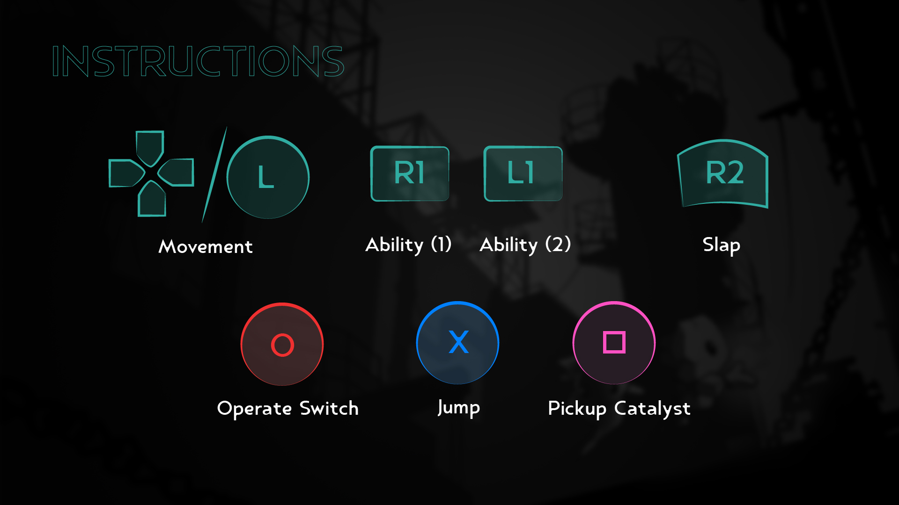
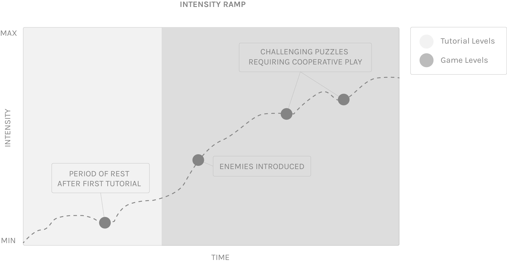
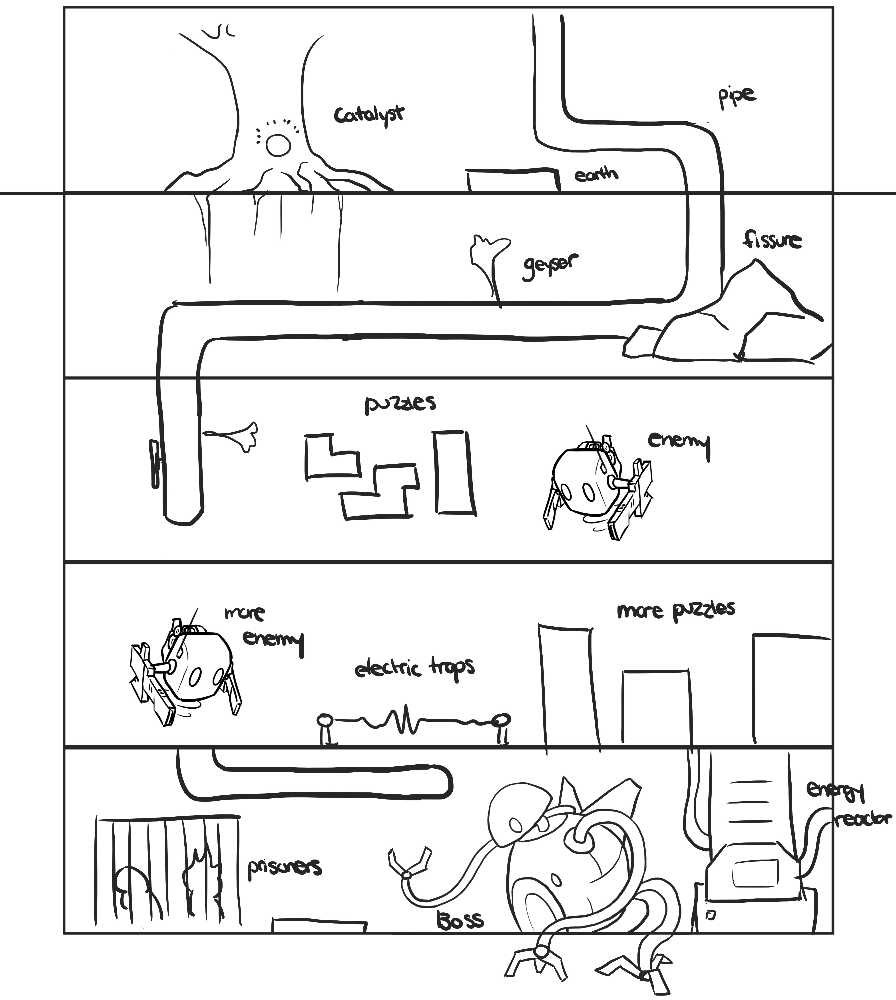
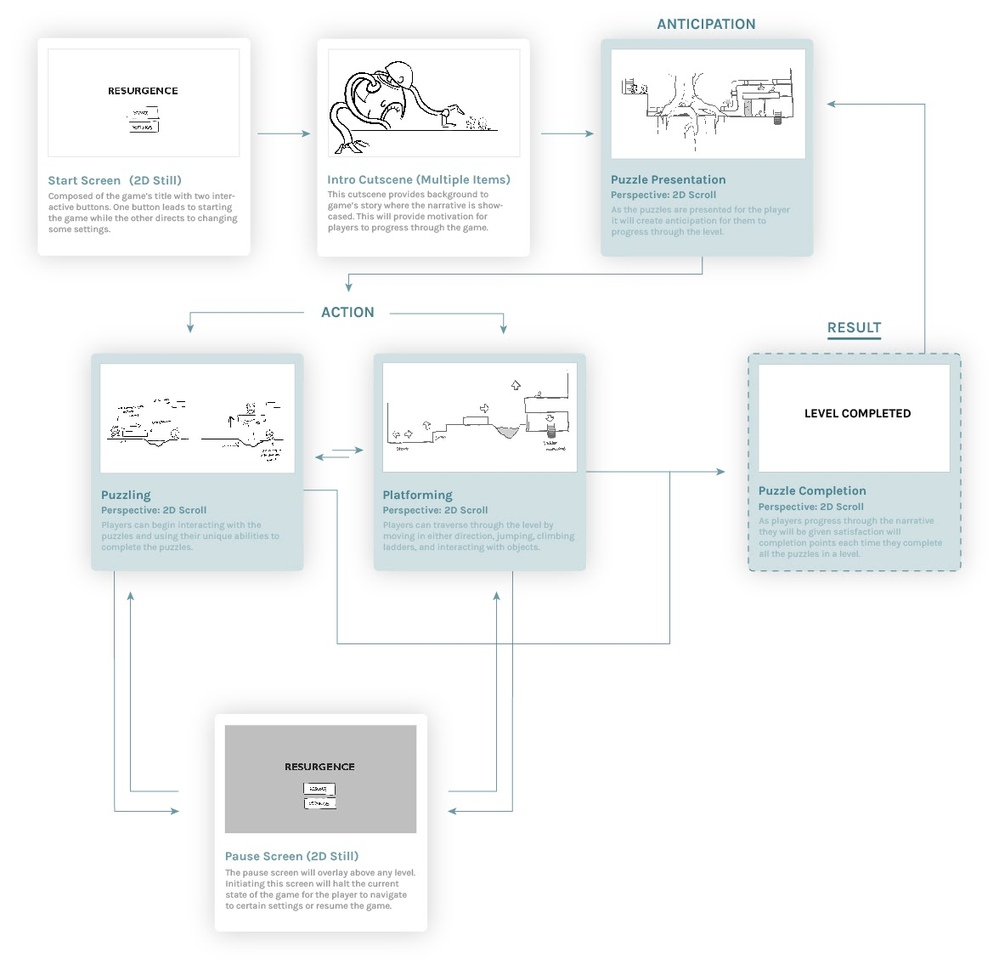

Resurgence
A cooperative game where players take on roles of elementals in a fantasy world, razed by industrialization.
Game Introduction
Inspired by mythology, our main protagonists are named Itzli and Tlaloc, after the Aztec Gods of stone and rain, respectfully. Azara, the lone metal, is our main antagonist whose name is translated from Persian meaning fire and scarlet red. The minions, we have nicknamed Godots, and act as dynamic obstacles that chase the players when they enter its line of sight.
Controls & Inputs
Our control scheme employs the use of physical controllers for input. This is important because our game is a cooperative game. Hence, by utilizing controllers, players have the freedom and space to operate the controls for the game without hindrance to their partner. Specifically, we are implementing the game with Dualshock 3 controllers. The d-pad is primarily used for movement and x to jump. The shoulder buttons of L1 and R1 are used to control each of the player’s two abilities. We added slaps as an interaction between the players, which is activated with the R2 button. Picking up and dropping the Catalyst is assigned to sqaure, whereas circle is used to operate switches. 
Gameplay Design
During easier levels, we implemented slower pacing schemes to match with its lack of danger. During later stages, when puzzles get harder, faster pacing is used when players are required to avoid an enemy or get past death-causing obstructions (zappers). Beyond this, we feed players with a narrative that aligns with the gameplay beats to elevate a feeling of increasing intensity through gameplay. By implementing a field of view for the Godots, we change its state to from normal to alerted, and elevate the intensity as it chases players and the Catalyst as it comes into its field of view. When players enter the final boss level, our plan is to section it into phases where Azara’s attacks progressively get more intense. First, Azara will fire lasers that take time to charge up and players can identify its angle of fire. This will be followed by a homing missile stage that players need to dodge, then a combination of the two. When Azara becomes enraged, the speed at which he fires his weapons, along with the quantity of it, increases, creating a climax for the intensity ramp.
The increasing difficulty of game progression is found with the ramping difficulty of the game’s terrain and its puzzles. This includes the formation of platforms and the placements of other archetypes (such as skill-intractable, enemies, and catalyst) to construct challenge setups for a gradual ramp up. As players approach the end of the game, they enter the boss level, where they must use previously learned mechanics to defeat Azara. We designed a linear level progression where players can see the stage as a whole. Although we have designed a specific route within each level, players are encouraged to explore and experiment their own gameplay style. When players trigger the Azara’s entrance, their accustomed approach becomes interrupted, hinting towards a conslusion.
Interface & Feedback Loops
Our game primarily uses a non-diegetic interface to provide feedback elements for the players. To teach players, we use a combination of button hovers and spatial identifiers that are triggered as players approach an interactable element. In using these visual affordances, we employ the use of recognition over recall for players to discern the difference between interactable and non-interactable elements. Overall, there is a lack of information required to be tracked. As per the rule of functionality preservation, by minimizing the interface, we can better immerse players into the game, as there is no element which feels intrusive to the game. Instead, the entire screen is the game, where menu and options are triggered with button presses.
Playtesting
Part of my role on this team was quality assurance, and I conducted a lot of iterative test sessions, which was mainly possible due to prefabs. It allowed us to drag and drop assets into the game directly, meaning we didn’t have to make new versions or instances each time we wanted to add a variation to gameplay. I used, in rotation, a few different usability testing methods, all of which were moderated and followed by an interview afterwards, where I had already generated a list of questions made from internal test sessions.
In the early stages of the game’s development, one of the techniques I frequently used was Fly On The Wall - where testers were given a set of tasks to complete. They were asked to seek help only when needed, since one of my priorities was to test for the visual indicators in the tutorial interface. This method was particularly useful after players got out of the tutorial levels, as there was nothing telling them what to do anymore.

In the later stages of the game’s development, one of the techniques I liked to use was Think Aloud - where testers verbalize their thoughts and actions. The only instruction given to them was to complete the game, and my team and I would take notes. I found this method to be helpful in getting an unbiased response to the game, as people didn’t want to be or seem harsh during the interview session. It also helped us to mark moments to compare and contrast with other sessions to see if notable moments were just a one-off thing, or a consistent finding.
Reflection
In this course, I learned a lot about interface design practices within game design. Implementing diegetic user interfaces as part of gameplay proved to be a compelling way to provide visual feedback to the player. This technique was useful to us, and is something we hope to use in future projects. This also worked hand-in-hand with some interaction design principles we learned. From this we saw how important it is.